Análisis de los docentes
En esta subsección describimos las características personales y laborales de los docentes, y evaluamos la asociación de dichas características con la presencia de entrenamiento en bioética.
library(reticulate)
use_condaenv("r-reticulate")# Librerías y configuraciones globales
import pandas as pd
import numpy as np
import matplotlib.pyplot as plt
import seaborn as sns
import scipy# Datos
df = pd.read_excel('docentes/Docentes_Datos.xlsx', engine='openpyxl')
df.head()## edad sexo grado ... no_formal formal entrenamiento
## 0 28 Mujer Grado Profesional ... Diplomado No Sí
## 1 50 Mujer Grado Profesional ... Diplomado No Sí
## 2 58 Mujer Especialización ... Diplomado No Sí
## 3 29 Mujer Especialización ... Capacitación No Sí
## 4 28 Mujer Licenciatura ... Capacitación No Sí
##
## [5 rows x 10 columns]# Ajustes de niveles de categorías
df = df.astype({'grado':'category','no_formal':'category','formal':'category'})
df['grado'].cat.reorder_categories(['Licenciatura','Grado Profesional','Especialización','Maestría'], ordered=True, inplace=True)
df['no_formal'].cat.reorder_categories(['No','Cursos cortos','Capacitación','Diplomado'], ordered=True, inplace=True)
df['formal'].cat.reorder_categories(['No','Especialización','Maestría'], ordered=True, inplace=True)# Información sobre el conjunto de datos
df.info()## <class 'pandas.core.frame.DataFrame'>
## RangeIndex: 105 entries, 0 to 104
## Data columns (total 10 columns):
## # Column Non-Null Count Dtype
## --- ------ -------------- -----
## 0 edad 105 non-null int64
## 1 sexo 105 non-null object
## 2 grado 105 non-null category
## 3 facultad 105 non-null object
## 4 carrera 105 non-null object
## 5 asignaturas 105 non-null object
## 6 experiencia 105 non-null int64
## 7 no_formal 105 non-null category
## 8 formal 105 non-null category
## 9 entrenamiento 105 non-null object
## dtypes: category(3), int64(2), object(5)
## memory usage: 6.7+ KB# Núm. docentes y de variables
df.shape## (105, 10)Datos personales
Edad
df['edad'].describe().astype(int)## count 105
## mean 39
## std 10
## min 23
## 25% 30
## 50% 38
## 75% 46
## max 67
## Name: edad, dtype: int64sns.histplot(x='edad', data=df)
plt.ylabel('Núm. docentes')
plt.xlabel('Edad, en años')
plt.ylim(0,25)## (0.0, 25.0)plt.show()
Sexo
df['sexo'].value_counts()## Mujer 81
## Hombre 24
## Name: sexo, dtype: int64df['sexo'].value_counts(normalize=True).round(2)## Mujer 0.77
## Hombre 0.23
## Name: sexo, dtype: float64sns.countplot(x='sexo', data=df)
plt.ylabel('Núm. docentes')
plt.xlabel('Sexo')
plt.show()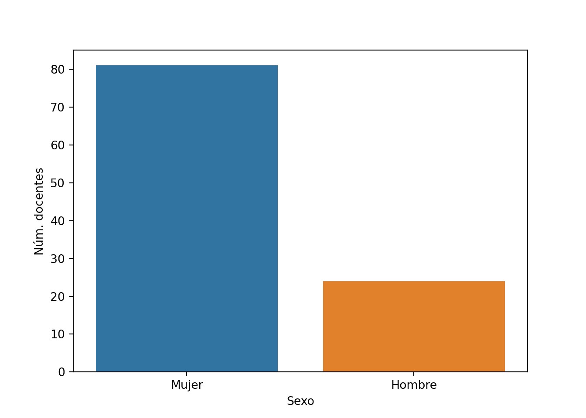
Grado académico
df['grado'].value_counts(sort=False)## Licenciatura 24
## Grado Profesional 30
## Especialización 32
## Maestría 19
## Name: grado, dtype: int64df['grado'].value_counts(sort=False, normalize=True).round(2)## Licenciatura 0.23
## Grado Profesional 0.29
## Especialización 0.30
## Maestría 0.18
## Name: grado, dtype: float64sns.countplot(x='grado', data=df)
plt.xlabel('Grado académico')
plt.ylabel('Núm. docentes')
plt.show()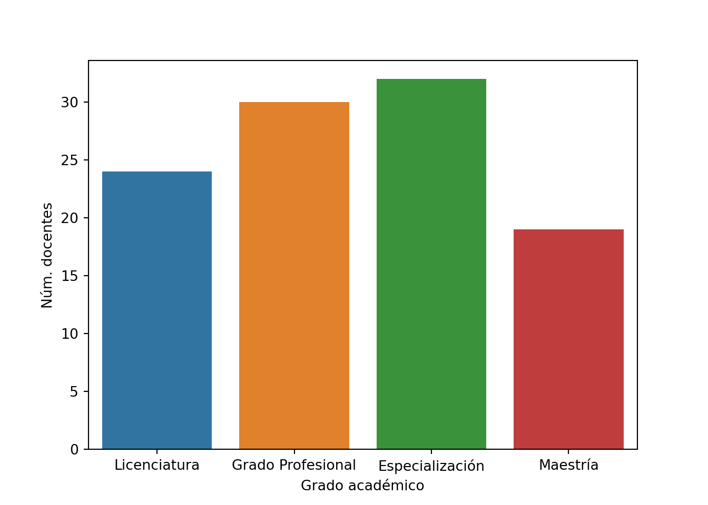
Facultad
df['facultad'].value_counts()## Facultad de Ciencias de la Salud 74
## Facultad de Medicina 31
## Name: facultad, dtype: int64df['facultad'].value_counts(normalize=True).round(2)## Facultad de Ciencias de la Salud 0.7
## Facultad de Medicina 0.3
## Name: facultad, dtype: float64sns.countplot(x='facultad', data=df)
plt.xlabel('Unidad académica')
plt.ylabel('Núm. docentes')
plt.show()Carrera
df['carrera'].value_counts()## Odontología 19
## Fisioterapia y Kinesiología 19
## Bioquímica 18
## Medicina 17
## Enfermería 14
## Nutrición 12
## Psicología 6
## Name: carrera, dtype: int64df['carrera'].value_counts(normalize=True).round(2)## Odontología 0.18
## Fisioterapia y Kinesiología 0.18
## Bioquímica 0.17
## Medicina 0.16
## Enfermería 0.13
## Nutrición 0.11
## Psicología 0.06
## Name: carrera, dtype: float64sns.countplot(y='carrera', data=df, order=df['carrera'].value_counts().index)
plt.ylabel('Carrera')
plt.xlabel('Núm. docentes')
plt.show()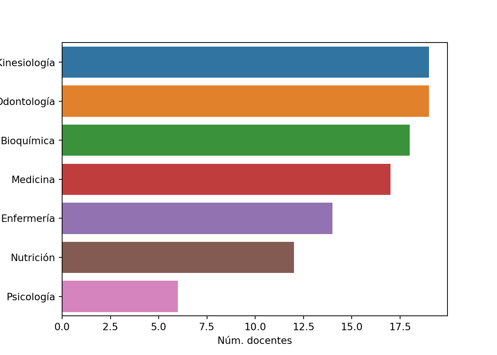
Experiencia docente
df['experiencia'].describe().astype(int)## count 105
## mean 8
## std 7
## min 1
## 25% 3
## 50% 6
## 75% 15
## max 35
## Name: experiencia, dtype: int64sns.histplot(x='experiencia', data=df)
plt.xlabel('Experiencia docente, en años')
plt.ylabel('Núm. docentes')
plt.show()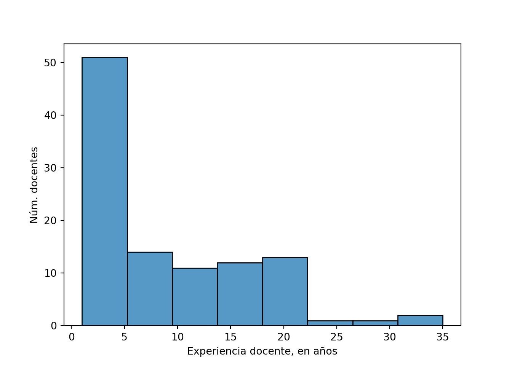
Entrenamiento no formal
entrenamiento = 'no_formal'
etiqueta = 'Entrenamiento no formal en bioética'
df[entrenamiento].value_counts(sort=False)## No 80
## Cursos cortos 19
## Capacitación 3
## Diplomado 3
## Name: no_formal, dtype: int64df[entrenamiento].value_counts(sort=False, normalize=True).round(2)## No 0.76
## Cursos cortos 0.18
## Capacitación 0.03
## Diplomado 0.03
## Name: no_formal, dtype: float64sns.countplot(x=entrenamiento, data=df, edgecolor='black')
plt.xlabel(etiqueta)
plt.ylabel('Núm. docentes')
plt.show()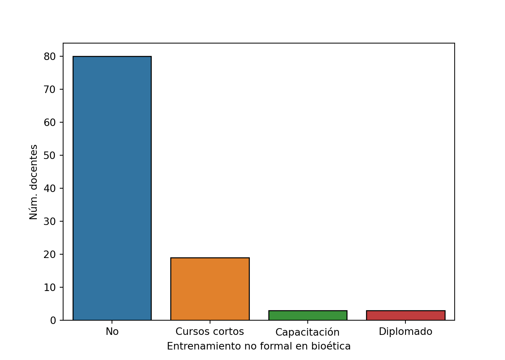
vs edad
var = 'edad' # Definición de la variable de interés
df.groupby(entrenamiento)[var].describe().round().transpose() # Tendencia central y dispersión## no_formal No Cursos cortos Capacitación Diplomado
## count 80.0 19.0 3.0 3.0
## mean 38.0 43.0 38.0 45.0
## std 9.0 14.0 17.0 16.0
## min 23.0 25.0 28.0 28.0
## 25% 31.0 28.0 28.0 39.0
## 50% 37.0 45.0 29.0 50.0
## 75% 44.0 54.0 44.0 54.0
## max 62.0 67.0 58.0 58.0scipy.stats.kruskal(*[data[var].values for name, data in df.groupby(entrenamiento)]) # Prueba de Kruskal-Wallis## KruskalResult(statistic=1.9126906406963458, pvalue=0.5907243163184515)sns.boxplot(x=entrenamiento, y=var, data =df) # Gráfico de cajas
plt.xlabel(etiqueta)
plt.ylabel('Edad, en años')
plt.show()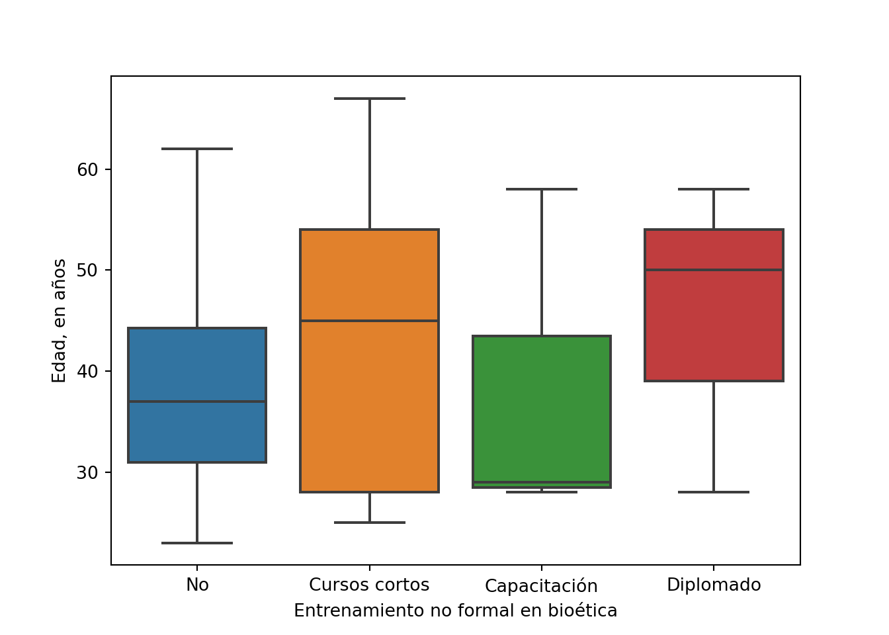
vs sexo
var = 'sexo' # Definición de la variable de contraste
pd.crosstab(df[var], df[entrenamiento]) # Frecuencia absoluta## no_formal No Cursos cortos Capacitación Diplomado
## sexo
## Hombre 21 3 0 0
## Mujer 59 16 3 3pd.crosstab(df[var], df[entrenamiento], normalize='index').round(2) # Frecuencia relativa## no_formal No Cursos cortos Capacitación Diplomado
## sexo
## Hombre 0.88 0.12 0.00 0.00
## Mujer 0.73 0.20 0.04 0.04scipy.stats.chi2_contingency(pd.crosstab(df[entrenamiento], df[var])) # Prueba del chi-cuadrado## (2.838313230994152, 0.4172316504679091, 3, array([[18.28571429, 61.71428571],
## [ 4.34285714, 14.65714286],
## [ 0.68571429, 2.31428571],
## [ 0.68571429, 2.31428571]]))sns.countplot(x=entrenamiento, hue=var, data=df, edgecolor='black') # Gráfico de barras
plt.xlabel(etiqueta)
plt.ylabel('Núm. docentes')
plt.legend(title='Sexo', loc='upper right')
plt.show()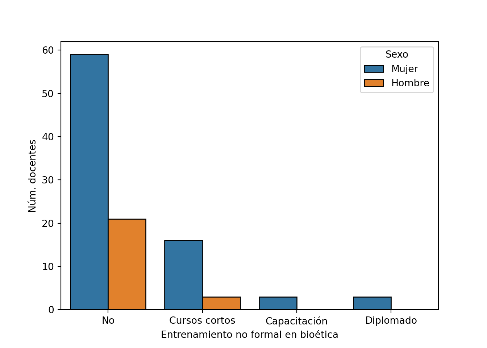
vs grado académico
var = 'grado' # Definición de la variable de contraste
pd.crosstab(df[var], df[entrenamiento]) # Frecuencia absoluta## no_formal No Cursos cortos Capacitación Diplomado
## grado
## Licenciatura 21 2 1 0
## Grado Profesional 24 3 1 2
## Especialización 23 7 1 1
## Maestría 12 7 0 0pd.crosstab(df[var], df[entrenamiento], normalize='index').round(2) # Frecuencia relativa## no_formal No Cursos cortos Capacitación Diplomado
## grado
## Licenciatura 0.88 0.08 0.04 0.00
## Grado Profesional 0.80 0.10 0.03 0.07
## Especialización 0.72 0.22 0.03 0.03
## Maestría 0.63 0.37 0.00 0.00scipy.stats.chi2_contingency(pd.crosstab(df[entrenamiento], df[var])) # Prueba del chi-cuadrado## (10.734184196098798, 0.29437023229553705, 9, array([[18.28571429, 22.85714286, 24.38095238, 14.47619048],
## [ 4.34285714, 5.42857143, 5.79047619, 3.43809524],
## [ 0.68571429, 0.85714286, 0.91428571, 0.54285714],
## [ 0.68571429, 0.85714286, 0.91428571, 0.54285714]]))sns.countplot(x=entrenamiento, hue=var, data=df, edgecolor='black') # Gráfico de barras
plt.xlabel(etiqueta)
plt.ylabel('Núm. docentes')
plt.legend(title='Grado académico', loc='upper right')
plt.show()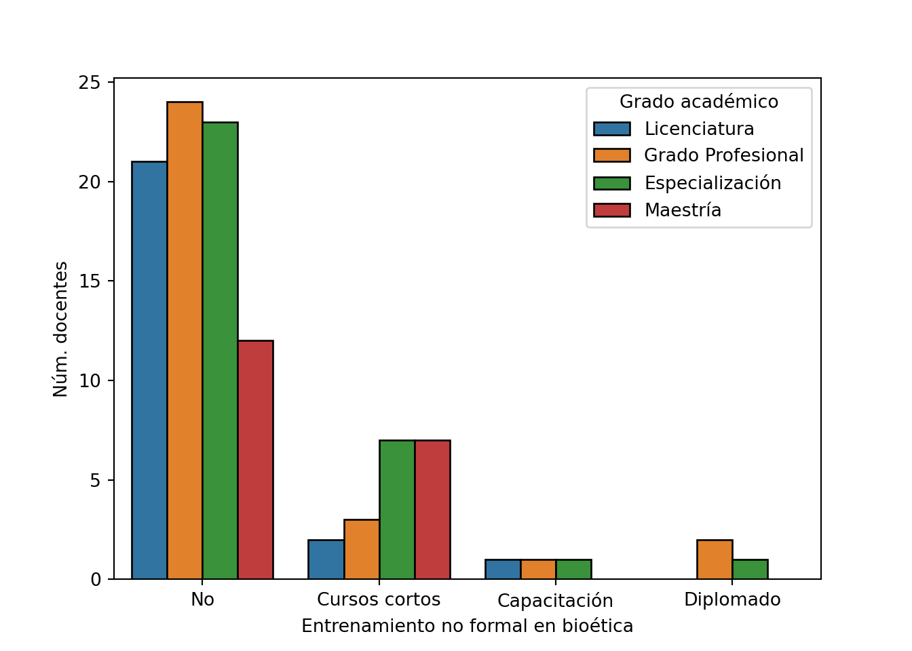
vs facultad
var = 'facultad' # Definición de la variable de contraste
pd.crosstab(df[var], df[entrenamiento]) # Frecuencia absoluta## no_formal No Cursos cortos Capacitación Diplomado
## facultad
## Facultad de Ciencias de la Salud 55 13 3 3
## Facultad de Medicina 25 6 0 0pd.crosstab(df[var], df[entrenamiento], normalize='index').round(2) # Frecuencia relativa## no_formal No Cursos cortos Capacitación Diplomado
## facultad
## Facultad de Ciencias de la Salud 0.74 0.18 0.04 0.04
## Facultad de Medicina 0.81 0.19 0.00 0.00scipy.stats.chi2_contingency(pd.crosstab(df[entrenamiento], df[var])) # Prueba del chi-cuadrado## (2.6666461134309176, 0.4459252278918513, 3, array([[56.38095238, 23.61904762],
## [13.39047619, 5.60952381],
## [ 2.11428571, 0.88571429],
## [ 2.11428571, 0.88571429]]))sns.countplot(x=entrenamiento, hue=var, data=df, edgecolor='black') # Gráfico de barras
plt.xlabel(etiqueta)
plt.ylabel('Núm. docentes')
plt.legend(title='Facultad', loc='upper right')
plt.show()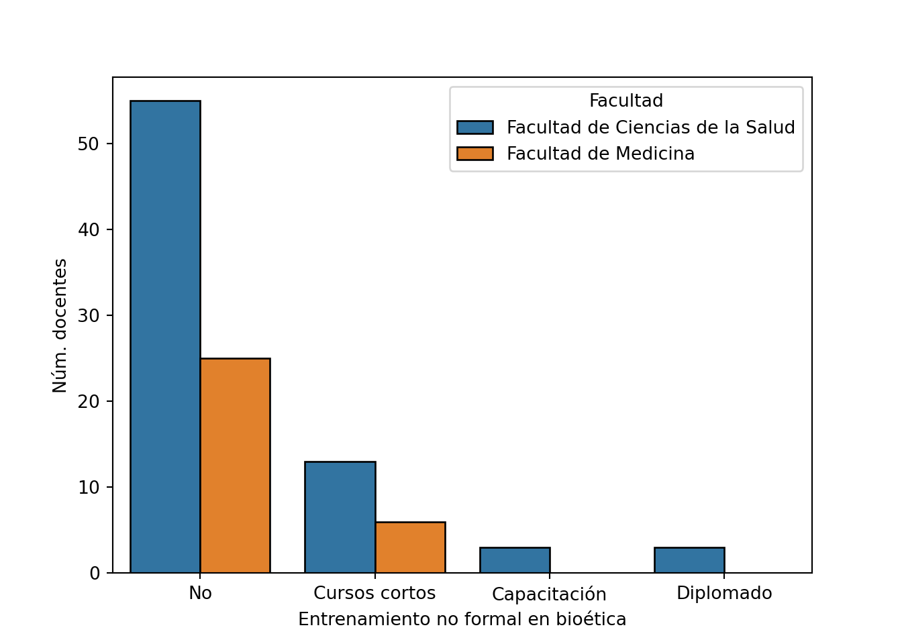
vs carrera
var = 'carrera' # Definición de la variable de contraste
pd.crosstab(df[var], df[entrenamiento]) # Frecuencia absoluta## no_formal No Cursos cortos Capacitación Diplomado
## carrera
## Bioquímica 14 2 0 2
## Enfermería 4 8 1 1
## Fisioterapia y Kinesiología 15 3 1 0
## Medicina 14 3 0 0
## Nutrición 11 1 0 0
## Odontología 16 2 1 0
## Psicología 6 0 0 0pd.crosstab(df[var], df[entrenamiento], normalize='index').round(2) # Frecuencia relativa## no_formal No Cursos cortos Capacitación Diplomado
## carrera
## Bioquímica 0.78 0.11 0.00 0.11
## Enfermería 0.29 0.57 0.07 0.07
## Fisioterapia y Kinesiología 0.79 0.16 0.05 0.00
## Medicina 0.82 0.18 0.00 0.00
## Nutrición 0.92 0.08 0.00 0.00
## Odontología 0.84 0.11 0.05 0.00
## Psicología 1.00 0.00 0.00 0.00scipy.stats.chi2_contingency(pd.crosstab(df[entrenamiento], df[var])) # Prueba del chi-cuadrado## (30.38097101144243, 0.033903228888663706, 18, array([[13.71428571, 10.66666667, 14.47619048, 12.95238095, 9.14285714,
## 14.47619048, 4.57142857],
## [ 3.25714286, 2.53333333, 3.43809524, 3.07619048, 2.17142857,
## 3.43809524, 1.08571429],
## [ 0.51428571, 0.4 , 0.54285714, 0.48571429, 0.34285714,
## 0.54285714, 0.17142857],
## [ 0.51428571, 0.4 , 0.54285714, 0.48571429, 0.34285714,
## 0.54285714, 0.17142857]]))sns.countplot(x=entrenamiento, hue=var, data=df, edgecolor='black') # Gráfico de barras
plt.xlabel(etiqueta)
plt.ylabel('Núm. docentes')
plt.legend(title='Carrera', loc='upper right')
plt.show()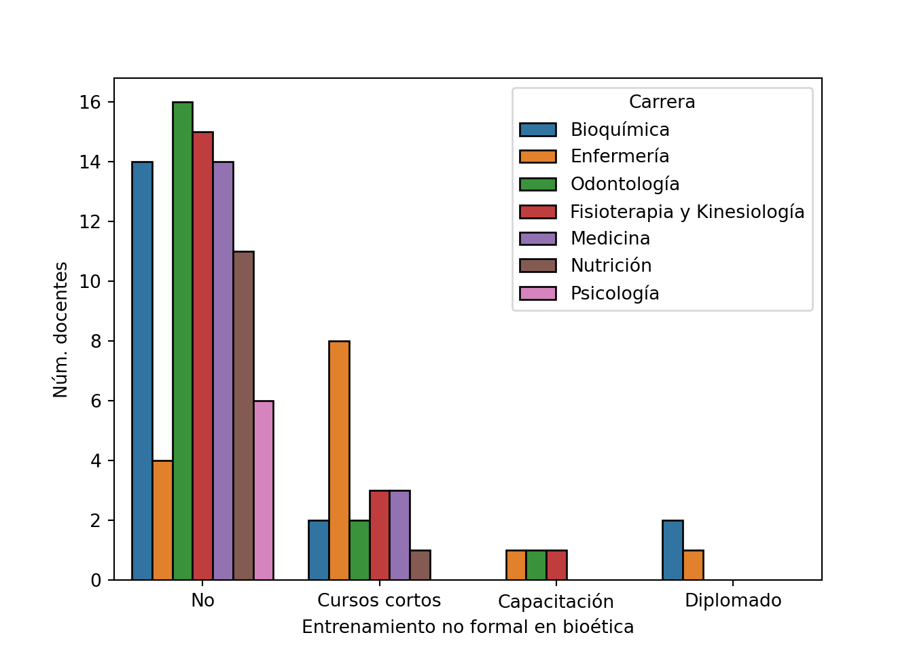
vs experiencia docente
var = 'experiencia'
df.groupby(entrenamiento)[var].describe().round().transpose() # Tendencia central y dispersión## no_formal No Cursos cortos Capacitación Diplomado
## count 80.0 19.0 3.0 3.0
## mean 8.0 11.0 10.0 10.0
## std 7.0 8.0 9.0 9.0
## min 1.0 1.0 4.0 3.0
## 25% 3.0 4.0 4.0 5.0
## 50% 5.0 11.0 5.0 7.0
## 75% 12.0 17.0 12.0 14.0
## max 35.0 28.0 20.0 20.0scipy.stats.kruskal(*[data[var].values for name, data in df.groupby(entrenamiento)]) # Prueba de Kruskal-Wallis## KruskalResult(statistic=2.7386406017078104, pvalue=0.43370061764345524)sns.boxplot(x=entrenamiento, y=var, data =df) # Gráfico de cajas
plt.xlabel(etiqueta)
plt.ylabel('Experiencia docente, en años')
plt.show()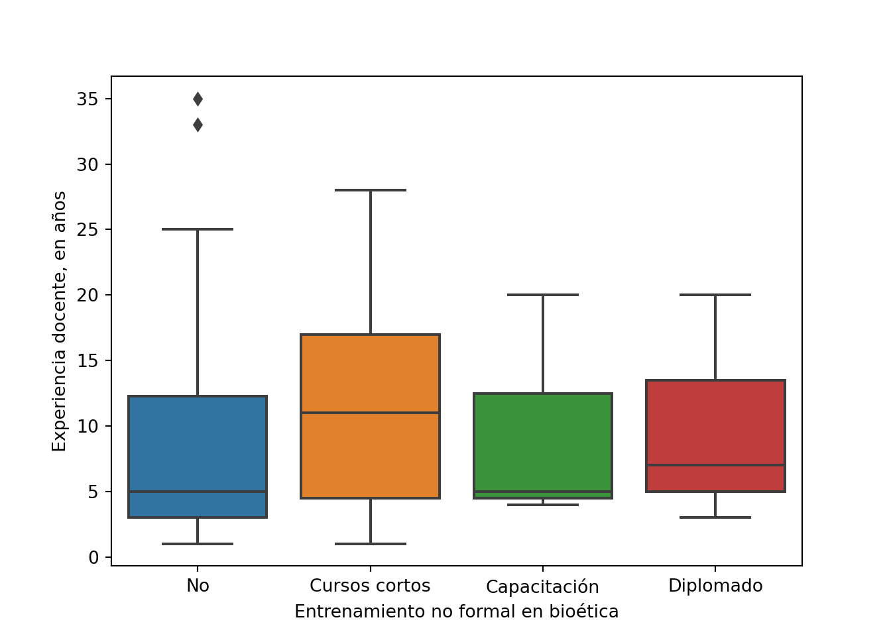
Entrenamiento formal
entrenamiento = 'formal'
etiqueta = 'Entrenamiento formal en bioética'
df[entrenamiento].value_counts(sort=False)## No 103
## Especialización 1
## Maestría 1
## Name: formal, dtype: int64df[entrenamiento].value_counts(sort=False, normalize=True).round(2)## No 0.98
## Especialización 0.01
## Maestría 0.01
## Name: formal, dtype: float64sns.countplot(x=entrenamiento, data=df, edgecolor='black')
plt.xlabel(etiqueta)
plt.ylabel('Núm. docentes')
plt.show()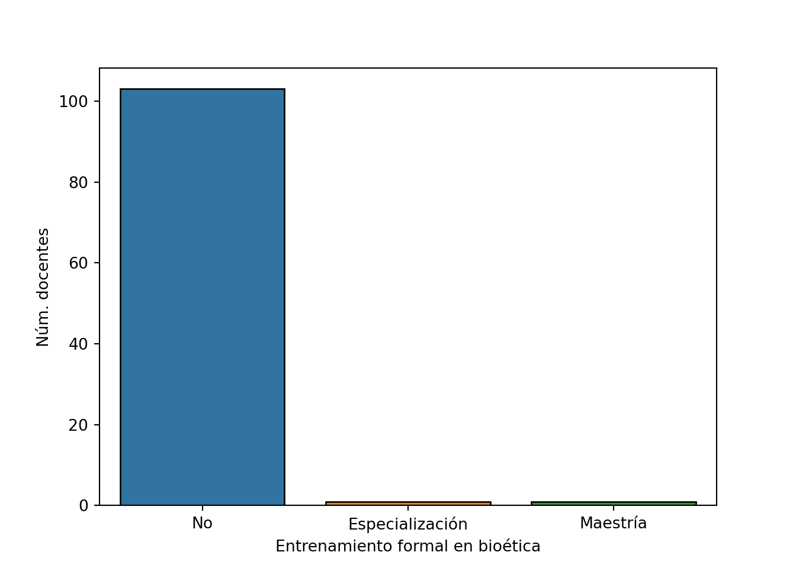
vs edad
var = 'edad' # Definición de la variable de interés
df.groupby(entrenamiento)[var].describe().round().transpose() # Tendencia central y dispersión## formal No Especialización Maestría
## count 103.0 1.0 1.0
## mean 39.0 32.0 27.0
## std 11.0 NaN NaN
## min 23.0 32.0 27.0
## 25% 30.0 32.0 27.0
## 50% 38.0 32.0 27.0
## 75% 46.0 32.0 27.0
## max 67.0 32.0 27.0scipy.stats.kruskal(*[data[var].values for name, data in df.groupby(entrenamiento)]) # Prueba de Kruskal-Wallis## KruskalResult(statistic=1.908886438035436, pvalue=0.38502646029474485)sns.boxplot(x=entrenamiento, y=var, data =df) # Gráfico de cajas
plt.xlabel(etiqueta)
plt.ylabel('Edad, en años')
plt.show()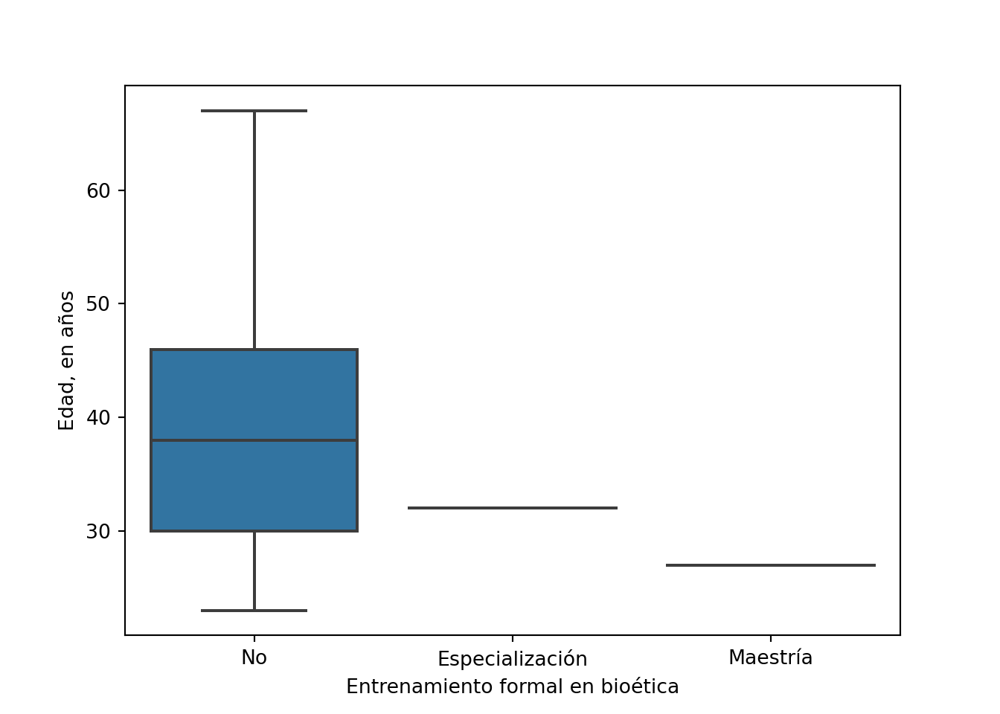
vs sexo
var = 'sexo' # Definición de la variable de contraste
pd.crosstab(df[var], df[entrenamiento]) # Frecuencia absoluta## formal No Especialización Maestría
## sexo
## Hombre 23 1 0
## Mujer 80 0 1pd.crosstab(df[var], df[entrenamiento], normalize='index').round(2) # Frecuencia relativa## formal No Especialización Maestría
## sexo
## Hombre 0.96 0.04 0.00
## Mujer 0.99 0.00 0.01scipy.stats.chi2_contingency(pd.crosstab(df[entrenamiento], df[var])) # Prueba del chi-cuadrado## (3.687522473930241, 0.15822119811342458, 2, array([[23.54285714, 79.45714286],
## [ 0.22857143, 0.77142857],
## [ 0.22857143, 0.77142857]]))sns.countplot(x=entrenamiento, hue=var, data=df, edgecolor='black') # Gráfico de barras
plt.xlabel(etiqueta)
plt.ylabel('Núm. docentes')
plt.legend(title='Sexo', loc='upper right')
plt.show()
vs grado académico
var = 'grado' # Definición de la variable de contraste
pd.crosstab(df[var], df[entrenamiento]) # Frecuencia absoluta## formal No Especialización Maestría
## grado
## Licenciatura 24 0 0
## Grado Profesional 29 0 1
## Especialización 32 0 0
## Maestría 18 1 0pd.crosstab(df[var], df[entrenamiento], normalize='index').round(2) # Frecuencia relativa## formal No Especialización Maestría
## grado
## Licenciatura 1.00 0.00 0.00
## Grado Profesional 0.97 0.00 0.03
## Especialización 1.00 0.00 0.00
## Maestría 0.95 0.05 0.00scipy.stats.chi2_contingency(pd.crosstab(df[entrenamiento], df[var])) # Prueba del chi-cuadrado## (7.075114971895759, 0.3139564744956458, 6, array([[23.54285714, 29.42857143, 31.39047619, 18.63809524],
## [ 0.22857143, 0.28571429, 0.3047619 , 0.18095238],
## [ 0.22857143, 0.28571429, 0.3047619 , 0.18095238]]))sns.countplot(x=entrenamiento, hue=var, data=df, edgecolor='black') # Gráfico de barras
plt.xlabel(etiqueta)
plt.ylabel('Núm. docentes')
plt.legend(title='Grado académico', loc='upper right')
plt.show()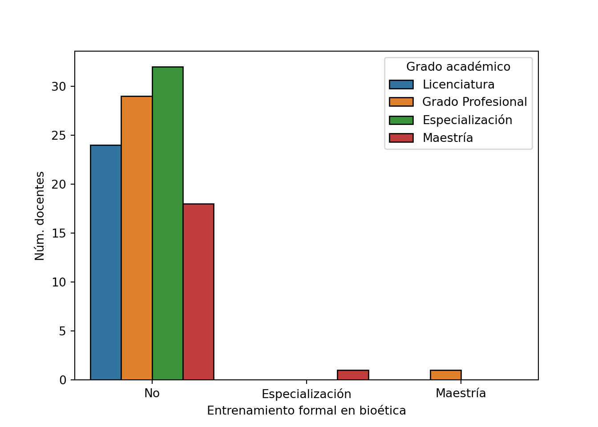
vs facultad
var = 'facultad' # Definición de la variable de contraste
pd.crosstab(df[var], df[entrenamiento]) # Frecuencia absoluta## formal No Especialización Maestría
## facultad
## Facultad de Ciencias de la Salud 73 0 1
## Facultad de Medicina 30 1 0pd.crosstab(df[var], df[entrenamiento], normalize='index').round(2) # Frecuencia relativa## formal No Especialización Maestría
## facultad
## Facultad de Ciencias de la Salud 0.99 0.00 0.01
## Facultad de Medicina 0.97 0.03 0.00scipy.stats.chi2_contingency(pd.crosstab(df[entrenamiento], df[var])) # Prueba del chi-cuadrado## (2.8138410881912286, 0.24489627042876436, 2, array([[72.59047619, 30.40952381],
## [ 0.7047619 , 0.2952381 ],
## [ 0.7047619 , 0.2952381 ]]))sns.countplot(x=entrenamiento, hue=var, data=df, edgecolor='black') # Gráfico de barras
plt.xlabel(etiqueta)
plt.ylabel('Núm. docentes')
plt.legend(title='Facultad', loc='upper right')
plt.show()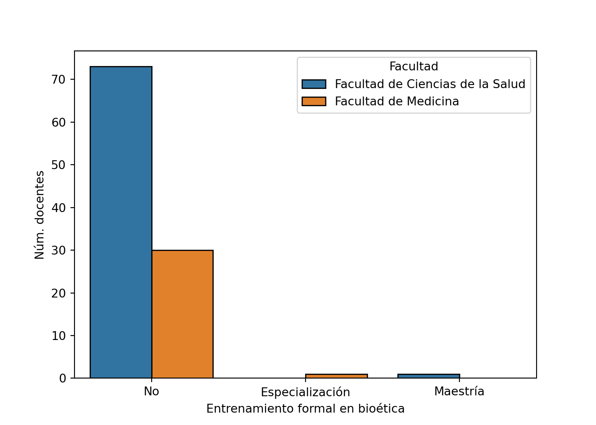
vs carrera
var = 'carrera' # Definición de la variable de contraste
pd.crosstab(df[var], df[entrenamiento]) # Frecuencia absoluta## formal No Especialización Maestría
## carrera
## Bioquímica 18 0 0
## Enfermería 14 0 0
## Fisioterapia y Kinesiología 19 0 0
## Medicina 16 1 0
## Nutrición 12 0 0
## Odontología 18 0 1
## Psicología 6 0 0pd.crosstab(df[var], df[entrenamiento], normalize='index').round(2) # Frecuencia relativa## formal No Especialización Maestría
## carrera
## Bioquímica 1.00 0.00 0.00
## Enfermería 1.00 0.00 0.00
## Fisioterapia y Kinesiología 1.00 0.00 0.00
## Medicina 0.94 0.06 0.00
## Nutrición 1.00 0.00 0.00
## Odontología 0.95 0.00 0.05
## Psicología 1.00 0.00 0.00scipy.stats.chi2_contingency(pd.crosstab(df[entrenamiento], df[var])) # Prueba del chi-cuadrado## (9.777570711473144, 0.6354670626616614, 12, array([[17.65714286, 13.73333333, 18.63809524, 16.67619048, 11.77142857,
## 18.63809524, 5.88571429],
## [ 0.17142857, 0.13333333, 0.18095238, 0.16190476, 0.11428571,
## 0.18095238, 0.05714286],
## [ 0.17142857, 0.13333333, 0.18095238, 0.16190476, 0.11428571,
## 0.18095238, 0.05714286]]))sns.countplot(x=entrenamiento, hue=var, data=df, edgecolor='black') # Gráfico de barras
plt.xlabel(etiqueta)
plt.ylabel('Núm. docentes')
plt.legend(title='Carrera', loc='upper right')
plt.show()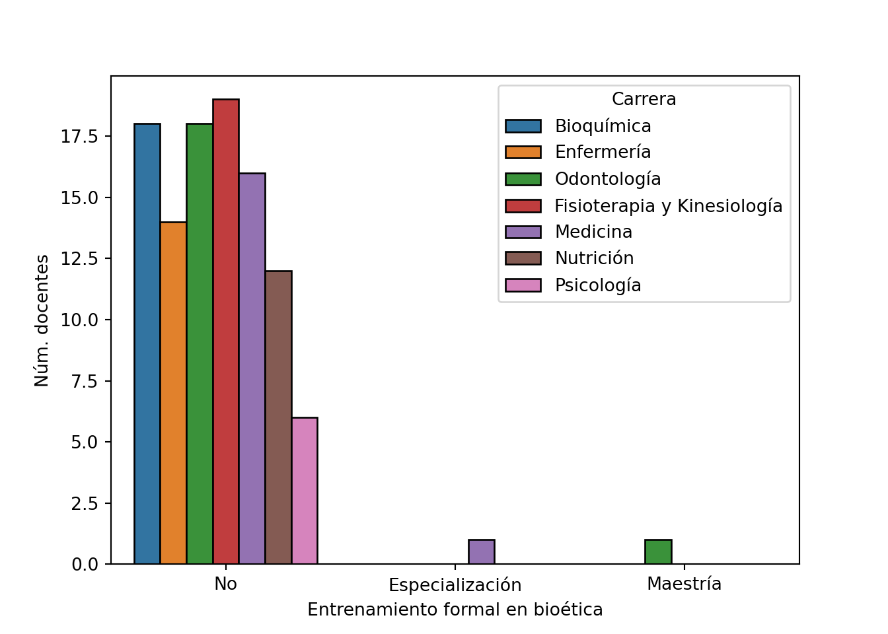
vs experiencia docente
var = 'experiencia'
df.groupby(entrenamiento)[var].describe().round().transpose() # Tendencia central y dispersión## formal No Especialización Maestría
## count 103.0 1.0 1.0
## mean 9.0 6.0 2.0
## std 7.0 NaN NaN
## min 1.0 6.0 2.0
## 25% 3.0 6.0 2.0
## 50% 6.0 6.0 2.0
## 75% 15.0 6.0 2.0
## max 35.0 6.0 2.0scipy.stats.kruskal(*[data[var].values for name, data in df.groupby(entrenamiento)]) # Prueba de Kruskal-Wallis## KruskalResult(statistic=1.8873846389533904, pvalue=0.38918817207787687)sns.boxplot(x=entrenamiento, y=var, data =df) # Gráfico de cajas
plt.xlabel(etiqueta)
plt.ylabel('Experiencia docente, en años')
plt.show()
Entrenamiento formal + no formal
entrenamiento = 'entrenamiento'
etiqueta = 'Entrenamiento (formal y no formal) en bioética'
df[entrenamiento].value_counts(sort=False)## Sí 26
## No 79
## Name: entrenamiento, dtype: int64df[entrenamiento].value_counts(sort=False, normalize=True).round(2)## Sí 0.25
## No 0.75
## Name: entrenamiento, dtype: float64sns.countplot(x=entrenamiento, data=df, edgecolor='black')
plt.xlabel(etiqueta)
plt.ylabel('Núm. docentes')
plt.show()
vs edad
var = 'edad' # Definición de la variable de interés
df.groupby(entrenamiento)[var].describe().round().transpose() # Tendencia central y dispersión## entrenamiento No Sí
## count 79.0 26.0
## mean 38.0 42.0
## std 9.0 14.0
## min 23.0 25.0
## 25% 31.0 28.0
## 50% 37.0 44.0
## 75% 44.0 56.0
## max 62.0 67.0scipy.stats.kruskal(*[data[var].values for name, data in df.groupby(entrenamiento)]) # Prueba de Kruskal-Wallis## KruskalResult(statistic=0.5801745286470208, pvalue=0.44624391940836794)sns.boxplot(x=entrenamiento, y=var, data =df, order=['No','Sí']) # Gráfico de cajas
plt.xlabel(etiqueta)
plt.ylabel('Edad, en años')
plt.show()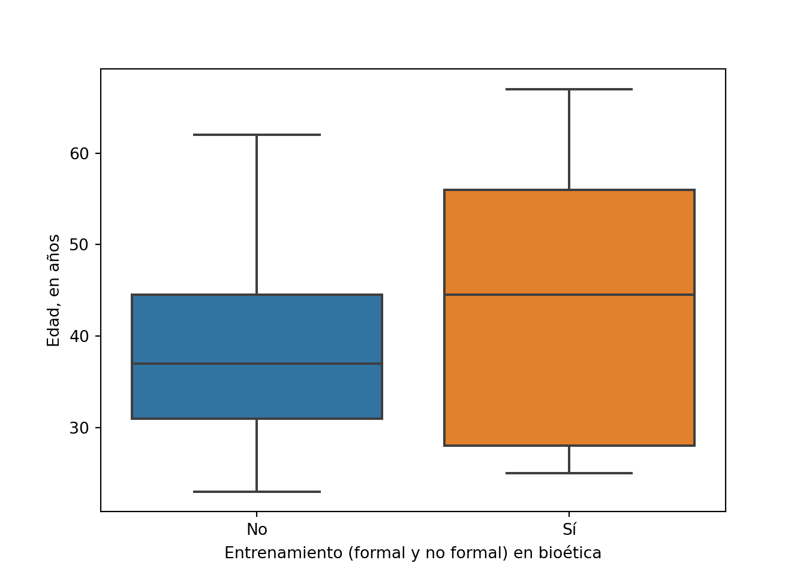
vs sexo
var = 'sexo' # Definición de la variable de contraste
pd.crosstab(df[var], df[entrenamiento]) # Frecuencia absoluta## entrenamiento No Sí
## sexo
## Hombre 21 3
## Mujer 58 23pd.crosstab(df[var], df[entrenamiento], normalize='index').round(2) # Frecuencia relativa## entrenamiento No Sí
## sexo
## Hombre 0.88 0.12
## Mujer 0.72 0.28scipy.stats.chi2_contingency(pd.crosstab(df[entrenamiento], df[var])) # Prueba del chi-cuadrado## (1.7300845910418698, 0.18840009485761022, 1, array([[18.05714286, 60.94285714],
## [ 5.94285714, 20.05714286]]))sns.countplot(x=entrenamiento, hue=var, data=df, edgecolor='black') # Gráfico de barras
plt.xlabel(etiqueta)
plt.ylabel('Núm. docentes')
plt.legend(title='Sexo', loc='upper right')
plt.show()
vs grado académico
var = 'grado' # Definición de la variable de contraste
pd.crosstab(df[var], df[entrenamiento]) # Frecuencia absoluta## entrenamiento No Sí
## grado
## Licenciatura 21 3
## Grado Profesional 23 7
## Especialización 23 9
## Maestría 12 7pd.crosstab(df[var], df[entrenamiento], normalize='index').round(2) # Frecuencia relativa## entrenamiento No Sí
## grado
## Licenciatura 0.88 0.12
## Grado Profesional 0.77 0.23
## Especialización 0.72 0.28
## Maestría 0.63 0.37scipy.stats.chi2_contingency(pd.crosstab(df[entrenamiento], df[var])) # Prueba del chi-cuadrado## (3.6522886985599348, 0.3015412344375651, 3, array([[18.05714286, 22.57142857, 24.07619048, 14.2952381 ],
## [ 5.94285714, 7.42857143, 7.92380952, 4.7047619 ]]))sns.countplot(x=entrenamiento, hue=var, data=df, edgecolor='black', order=['No','Sí']) # Gráfico de barras
plt.xlabel(etiqueta)
plt.ylabel('Núm. docentes')
plt.legend(title='Grado académico', loc='upper right')
plt.show()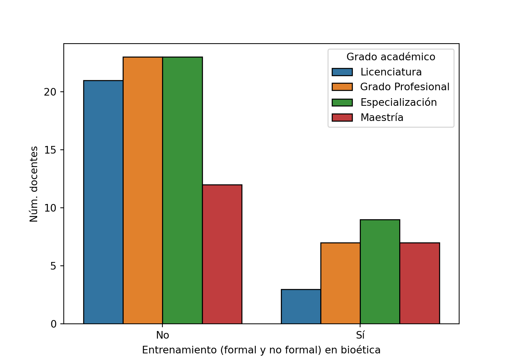
vs facultad
var = 'facultad' # Definición de la variable de contraste
pd.crosstab(df[var], df[entrenamiento]) # Frecuencia absoluta## entrenamiento No Sí
## facultad
## Facultad de Ciencias de la Salud 54 20
## Facultad de Medicina 25 6pd.crosstab(df[var], df[entrenamiento], normalize='index').round(2) # Frecuencia relativa## entrenamiento No Sí
## facultad
## Facultad de Ciencias de la Salud 0.73 0.27
## Facultad de Medicina 0.81 0.19scipy.stats.chi2_contingency(pd.crosstab(df[entrenamiento], df[var])) # Prueba del chi-cuadrado## (0.33988293622327964, 0.5598968011370057, 1, array([[55.67619048, 23.32380952],
## [18.32380952, 7.67619048]]))sns.countplot(x=entrenamiento, hue=var, data=df, edgecolor='black', order=['No','Sí']) # Gráfico de barras
plt.xlabel(etiqueta)
plt.ylabel('Núm. docentes')
plt.legend(title='Facultad', loc='upper right')
plt.show()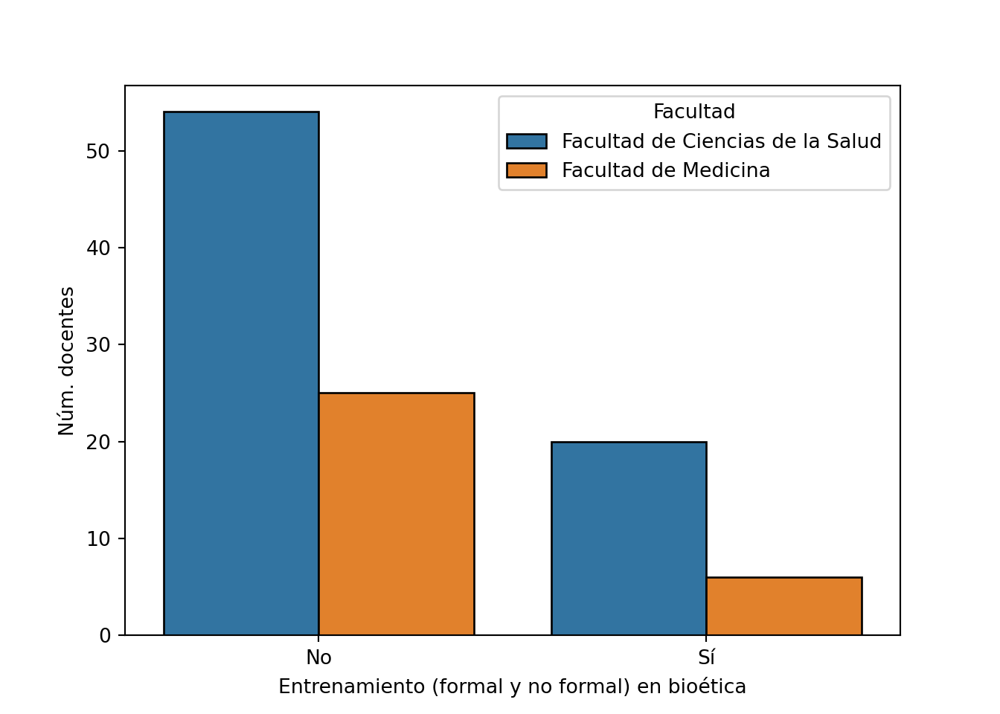
vs carrera
var = 'carrera' # Definición de la variable de contraste
pd.crosstab(df[var], df[entrenamiento]) # Frecuencia absoluta## entrenamiento No Sí
## carrera
## Bioquímica 14 4
## Enfermería 4 10
## Fisioterapia y Kinesiología 15 4
## Medicina 14 3
## Nutrición 11 1
## Odontología 15 4
## Psicología 6 0pd.crosstab(df[var], df[entrenamiento], normalize='index').round(2) # Frecuencia relativa## entrenamiento No Sí
## carrera
## Bioquímica 0.78 0.22
## Enfermería 0.29 0.71
## Fisioterapia y Kinesiología 0.79 0.21
## Medicina 0.82 0.18
## Nutrición 0.92 0.08
## Odontología 0.79 0.21
## Psicología 1.00 0.00scipy.stats.chi2_contingency(pd.crosstab(df[entrenamiento], df[var])) # Prueba del chi-cuadrado## (20.88312354358029, 0.00192545280423765, 6, array([[13.54285714, 10.53333333, 14.2952381 , 12.79047619, 9.02857143,
## 14.2952381 , 4.51428571],
## [ 4.45714286, 3.46666667, 4.7047619 , 4.20952381, 2.97142857,
## 4.7047619 , 1.48571429]]))sns.countplot(x=entrenamiento, hue=var, data=df, edgecolor='black', order=['No','Sí']) # Gráfico de barras
plt.xlabel(etiqueta)
plt.ylabel('Núm. docentes')
plt.legend(title='Carrera', loc='upper right')
plt.show()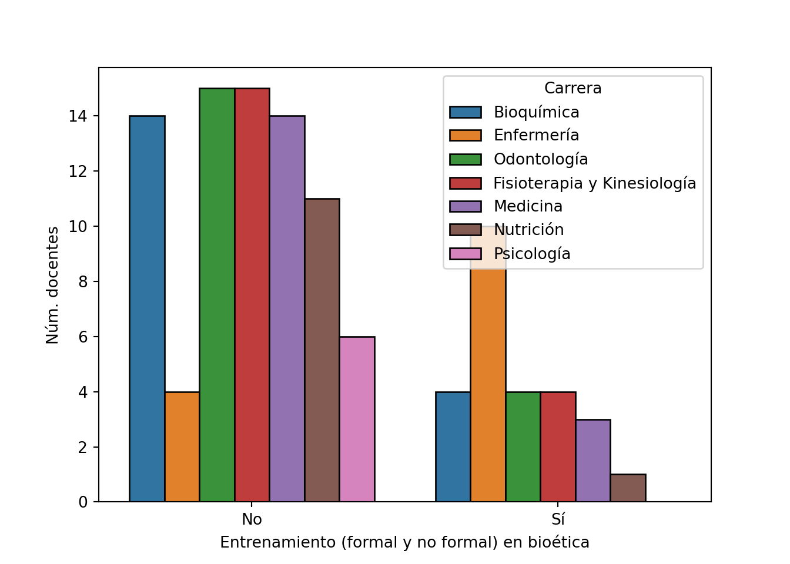
vs experiencia docente
var = 'experiencia'
df.groupby(entrenamiento)[var].describe().round().transpose() # Tendencia central y dispersión## entrenamiento No Sí
## count 79.0 26.0
## mean 8.0 11.0
## std 7.0 8.0
## min 1.0 1.0
## 25% 3.0 4.0
## 50% 5.0 8.0
## 75% 12.0 18.0
## max 35.0 28.0scipy.stats.kruskal(*[data[var].values for name, data in df.groupby(entrenamiento)]) # Prueba de Kruskal-Wallis## KruskalResult(statistic=1.7186296638096883, pvalue=0.18986953290504127)sns.boxplot(x=entrenamiento, y=var, data =df, order=['No','Sí']) # Gráfico de cajas
plt.xlabel(etiqueta)
plt.ylabel('Experiencia docente, en años')
plt.show()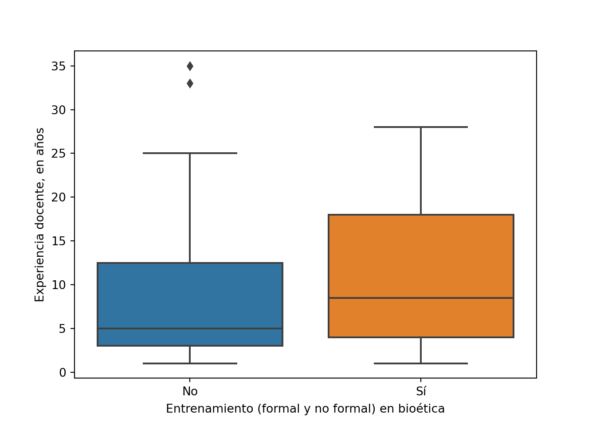